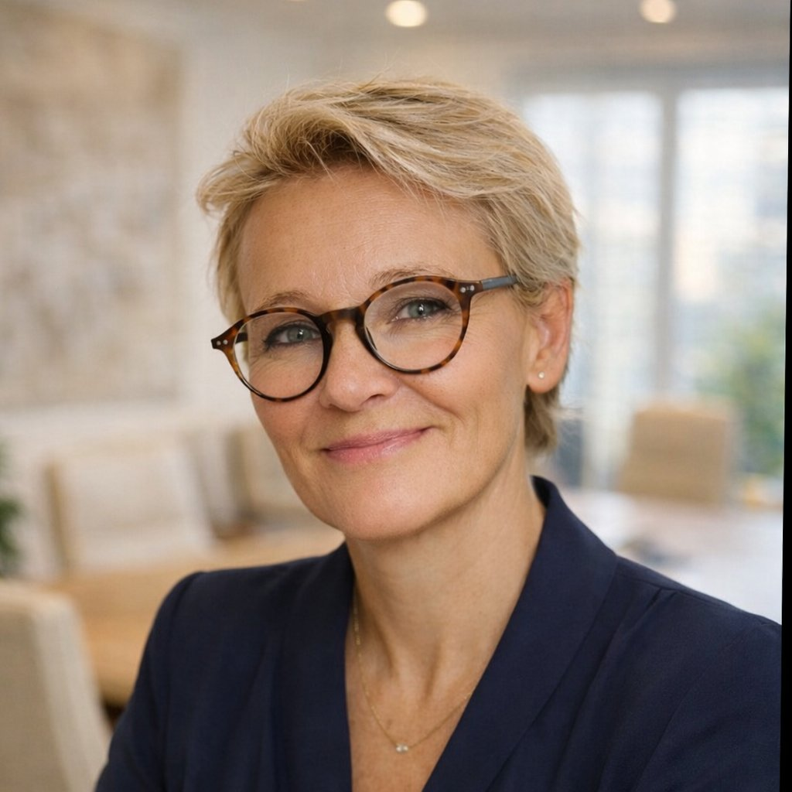

Office & Projektmanagement
Interims-Geschäftsführungsassistenz, Büromanagement, Projektkoordination. Ich übernehme nahtlos – ohne wochenlange Einarbeitung, ohne Reibungsverluste, ohne Drama.
Diane C. Ihlefeldt · Freiberufliche Spezialistin für Office-, Projekt- & KI-Management
30+ Jahre in leitenden Management- und Assistenzfunktionen — kombiniert mit zertifizierter KI-Kompetenz. Für Unternehmen, Verbände und Stiftungen, die jemanden suchen, der vom ersten Tag an mitdenkt statt eingearbeitet werden muss.
Was ich für Sie tue
Statt drei Dienstleister zu koordinieren, bekommen Sie eine erfahrene Spezialistin, die alle drei Bereiche aus einer Hand abdeckt — und untereinander verzahnt.
Interims-Geschäftsführungsassistenz, Büromanagement, Projektkoordination. Ich übernehme nahtlos – ohne wochenlange Einarbeitung, ohne Reibungsverluste, ohne Drama.
Konzeption und Umsetzung von Konferenzen, Tagungen, Seminaren und Incentives. Vom ersten Briefing bis zur Nachbereitung — inklusive der Details, an die andere erst hinterher denken.
Einführung von KI-Tools in bestehende Abläufe, Prozessanalyse, Schulung Ihrer Mitarbeitenden. Ich übersetze KI in Ihren Arbeitsalltag — verständlich, datenschutzkonform, sofort nutzbar.
KI-Expertise
Im Februar 2026 habe ich den AZAV-zertifizierten Lehrgang „KI-Manager (HC)“ bei Hilker Consulting abgeschlossen — 8 Module, 320 Unterrichtseinheiten, mit eigener Projektarbeit zur Entwicklung einer KI-Strategie mit Pilotprojekt/MVP. Diese Kompetenzen bringe ich ab sofort in jeden Auftrag ein.
Grundlagen, Begriffe, Marktüberblick — Einordnung des Umbruchs für strategische Entscheidungen.
Wo generative KI heute echten Mehrwert bringt — und wo nicht.
Professionelle Kommunikation mit KI-Systemen für präzise, nutzbare Ergebnisse.
Toolkenntnis für Office, Recherche, Texterstellung sowie Bild- und Datenarbeit.
Strukturiertes Vorgehen vom Bedarf zur strategischen KI-Roadmap.
Use-Case-Auswahl, Pilotdesign und Erfolgsmessung — von der Idee zum belastbaren MVP.
Bewährte Muster aus realen Einführungen — was funktioniert und was scheitert.
EU AI Act, DSGVO, Urheberrecht, Governance — rechtssicher von Anfang an.
Die Weiterbildung unterstützt Unternehmen beim Aufbau von KI-Kompetenz gemäß Art. 4 EU AI Act, der seit Februar 2025 gilt. Mit dem „Digital Omnibus on AI“ (2026) wurde die Vorgabe von einer strikten Nachweispflicht zu einer Förderpflicht weiterentwickelt — der praktische Handlungsbedarf für Anbieter und Betreiber bleibt bestehen, und genau hier setze ich an.
Projektbeispiele
Stellvertretend für die Bandbreite meiner Mandate — vom langjährigen Verbandsalltag bis zum strategischen Konzept-Pitch. Aus Diskretionsgründen werden Auftraggeber nur dort namentlich genannt, wo eine ausdrückliche Freigabe vorliegt.
Meine Arbeitsweise

Über mich
Ich bin Diane C. Ihlefeldt. Seit über 30 Jahren arbeite ich in leitenden Assistenz- und Managementfunktionen — im Rahmen von Agenturmandaten (BBDO-Gruppe) für Konzerne wie Deutsche Post und Volkswagen, für Bundesverbände wie den BOGK e.V. mit Büros in Bonn und Brüssel, und als Gründerin meines eigenen Unternehmens.
2026 habe ich meine Zertifizierung zur KI-Managerin (AZAV) abgeschlossen. Nicht weil KI ein Trend ist — sondern weil ich meinen Auftraggebern das mächtigste Produktivitätswerkzeug unserer Zeit zugänglich machen will, ohne dass sie selbst in monatelange Recherche müssen.
2023 habe ich ein Buch über die Begleitung eines demenziell erkrankten und erblindeten Angehörigen veröffentlicht. Diese Erfahrung hat mich gelehrt: Zuverlässigkeit ist keine Eigenschaft — sie ist eine Entscheidung.
„Ich weiß, wann Technologie hilft — und wann Loyalität, Menschlichkeit und Urteilsvermögen entscheidend sind.“
Sechs Arbeitgeber über mehr als 30 Jahre haben meine Leistung einheitlich als „vorbildlich“ bewertet.
Nachgewiesene Ergebnisse
Was Auftraggeber sagen
Frau Ihlefeldt erledigte diese vielseitigen Arbeitsbereiche stets in höchstem Maße mit Fachkompetenz, Flexibilität und persönlicher Einsatzbereitschaft. Ihre persönliche Haltung und ihr Leistungsvermögen sind vorbildlich.
Frau Ihlefeldt ist eine außerordentlich engagierte und zuverlässige Mitarbeiterin. Loyalität und Diskretion sind für sie selbstverständlich, ebenso ein jederzeit freundlicher sowie zuvorkommender Auftritt.
Frau Ihlefeldt gelang es stets gut, Subunternehmer mit unterschiedlichen Fähigkeiten und Zielsetzungen erfolgreich in ein Projektteam einzugliedern. Sie geht neue Aufgaben rational und analytisch an … und ist stets bereit, in großem Umfang Verantwortung zu übernehmen.
Aufgrund ihrer vielseitigen Kompetenzen und nicht zuletzt wegen ihrer Arbeitshaltung und ihrer persönlichen Ausstrahlung ist Frau Ihlefeldt eine Bereicherung für das Team. Belastbarkeit, Flexibilität, Kreativität und Eigeninitiative zeichnen sie aus … Ihr Verhalten gegenüber Vorgesetzten, Kollegen, Mitarbeitern und Mitgliedern des Verbandes ist stets vorbildlich.
Frau Ihlefeldt war für unseren Verband eine jederzeit loyale, überdurchschnittlich belastbare und engagierte Mitarbeiterin, die auch in Krisenzeiten sicher und souverän ihre Aufgaben bestens erledigte.
Einsatzgebiet
Alfter · Bonn · Köln und Umkreis ca. 30 km. Vor-Ort-Einsätze, hybride und vollständig remote Projekte möglich. PKW vorhanden — flexible Einsatzplanung selbstverständlich.
Deutschlandweit und EU-weit remote verfügbar — auf Wunsch auch vor Ort.
Kein Verkaufsgespräch. Kein Druck. Nur 30 Minuten, in denen wir gemeinsam schauen, ob und wie ich Ihrer Organisation helfen kann. Ich melde mich innerhalb von 24 Stunden zurück.
Rechtliches
Informationspflichten gemäß Art. 13 & 14 DSGVO und § 5 TMG. Stand: Juli 2026.
Diane C. Ihlefeldt · Görreshof 33a · 53347 Alfter
E-Mail: dci4business@gmail.com · Tel.: +49 179 49 00 262
Verantwortlich für den Inhalt nach § 18 Abs. 2 MStV: Diane C. Ihlefeldt, Anschrift wie oben.
Beim Aufruf dieser Website werden automatisch technische Verbindungsdaten (IP-Adresse, Browsertyp, aufgerufene Seite, Datum/Uhrzeit) in Server-Logfiles gespeichert. Diese Daten sind für den Betrieb der Website technisch erforderlich und werden nicht mit anderen Daten verknüpft. Wenn Sie mich per E-Mail oder Telefon kontaktieren, verarbeite ich die mitgeteilten Daten ausschließlich zur Bearbeitung Ihrer Anfrage.
Diese Website verwendet kein Google Analytics, keine Werbecookies, keine Social-Media-Plugins und keine externen Schriftarten von Google Fonts. Alle Schriften werden lokal vom Server ausgeliefert. Es findet kein Profiling und keine Übertragung von Daten an Dritte (außer dem Hoster, siehe Punkt 7) statt.
Kontaktdaten werden bis zur abschließenden Bearbeitung gespeichert, längstens 3 Jahre. Server-Logfiles werden nach 7 Tagen automatisch gelöscht.
Sie haben das Recht auf Auskunft, Berichtigung, Löschung, Einschränkung der Verarbeitung, Datenübertragbarkeit und Widerspruch. Wenden Sie sich dazu an: dci4business@gmail.com
Beschwerderecht bei der Aufsichtsbehörde: Landesbeauftragte für Datenschutz und Informationsfreiheit NRW (LDI NRW), www.ldi.nrw.de
Diese Website wird auf GitHub Pages (GitHub, Inc., USA) gehostet. Beim Aufruf der Seite werden technisch erforderliche Verbindungsdaten (insb. IP-Adresse) an Server von GitHub übertragen. Rechtsgrundlage: Art. 6 Abs. 1 lit. f DSGVO (berechtigtes Interesse an einem stabilen, kostengünstigen Webauftritt). Der Datentransfer in die USA erfolgt auf Basis der Standardvertragsklauseln und der Zertifizierung von GitHub unter dem EU-US Data Privacy Framework. Datenschutzerklärung: docs.github.com.
Die Europäische Kommission stellt eine Plattform zur Online-Streitbeilegung (OS) bereit: ec.europa.eu/consumers/odr. Ich bin nicht bereit und nicht verpflichtet, an einem Streitbeilegungsverfahren vor einer Verbraucherschlichtungsstelle teilzunehmen.
Diese Website enthält Verlinkungen auf externe Websites Dritter, auf deren Inhalte ich keinen Einfluss habe. Zum Zeitpunkt der Verlinkung wurden die externen Seiten auf mögliche Rechtsverstöße geprüft — rechtswidrige Inhalte waren nicht erkennbar. Eine permanente inhaltliche Kontrolle der verlinkten Seiten ist ohne konkreten Anhaltspunkt einer Rechtsverletzung nicht zumutbar. Bei Bekanntwerden von Rechtsverstößen werde ich derartige Links umgehend entfernen.
Die durch mich erstellten Inhalte und Werke auf dieser Website — Texte, Bilder, Grafiken, Layout, Konzept — unterliegen dem deutschen Urheberrecht. Vervielfältigung, Bearbeitung, Verbreitung und jede Art der Verwertung außerhalb der Grenzen des Urheberrechts bedürfen meiner schriftlichen Zustimmung. Downloads und Kopien dieser Seite sind nur für den privaten, nicht kommerziellen Gebrauch gestattet.
Porträtfoto © Diane C. Ihlefeldt. Alle Rechte vorbehalten.